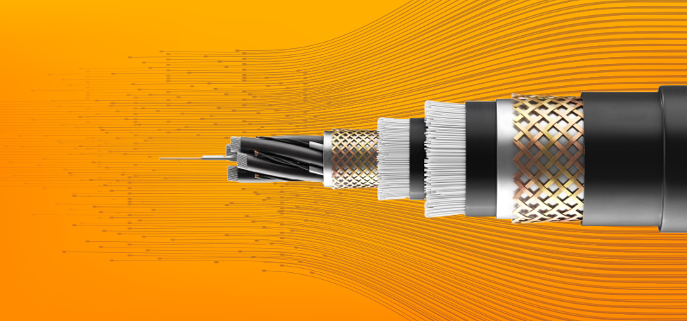

587

182

Save

The need to stay always connected, for individuals as well as for enterprises, has set the demand rolling for high internet speeds with high quality and consistency. Further, innovations in the telecom sector have increased the deployment of broadband-based network architectures. This all has given a huge growth opportunity for the fiber optic cable (OFC) industry.
Optical Fibre is hair-thin material made of glass. Generally, optical fiber has a diameter of 125 micrometers (μm), which is actually the diameter of the cladding, or outer reflecting layer. The core, or inner transmitting cylinder, may have a much smaller diameter (sometimes 10 μm). Through the process of total internal reflection, light rays are reflected into the fibers within the core. This can happen for great distances with little attenuation or reduction in density. The degree of attenuation varies according to the wavelength, with little attenuation in intensity.
A fiber-optic cable is composed of very thin strands of glass or plastic known as optical fibers; one cable can have as few as two strands or as many as several hundreds of them. These optical fiber cables carry information in the form of data between two places using optical or light-based technology. Once the light beams travel down the optical fiber cable (OFC), they would emerge at the other end. A photoelectric cell will be required to turn the pulses of light back into electrical information the computer can understand.
While traveling down fiber optic cable, light bounces repeatedly off the walls. The beam of light does not leak out of the edges because it hits the glass at really shallow angles. And then it reflects back again as if the glass were really a mirror. This is called total internal reflection. The other factor that keeps it in the pipe is the cable structure.
Fiber cable offers many advantages, the prime ones being higher bandwidth and reach. Optical fibre cables (OFC) are now preferred over old copper telecom cables as they provide high-speed broadband services. Optical fibre loses 3% of the signal over 100 meters of distance, while copper wires lose 94%. Additionally, optical fibres are more long-lasting as compared to copper wires, which are much more fragile. Copper wire can be tapped very easily, while optical fibres do not radiate signals that can be tapped. Optical fibre offers much lower latency (the amount of time required to perform data transmission) compared to copper wires.
The Indian optical fiber cable market is gaining traction. The growth is driven by continued investments being made by the Indian government in developing OFC network infrastructure, in various projects. The Indian market for optical fibre cable (OFC) is projected to grow at a CAGR of 17% through 2023. There has been increased adoption of Fiber-to-the-Home (FTTH) connectivity owing to government initiatives such as Digital India, Smart Cities, or Bharatnet. Moreover, the growing number of data centers in India will fuel this growth further.
The telecom industry is among the primary applications of optical fiber communication. The increasing need for 24×7 high-speed connectivity and an increase in data traffic due to services such as voice, messaging, emails, downloads, and video streaming is made possible only with optical fibre communication.
Indian OFC manufacturers have been making great efforts to meet domestic demand for optic fibre cable. For this, they also need support to ensure sustainable development to the overall economy. In several developed countries, initiatives like tax incentives, substantial project subsidies, and financial support for R&D have assisted domestic players to proliferate. The Indian manufacturers have the capability and capacity, and they also need a similar kind of support from the government.
STL Tech is one of the most trusted end-to-end optical fibre manufacturers in India and the only company in the world with a fully integrated silicon-to-software pipeline. We specialize in everything from manufacturing optical fiber cables of various types and for various applications, to designing and installing integrated hyper-scale fiber optic networks. STL’s innovative optical fibre products are utilized in a plethora of large-scale applications such as long-haul, metropolitan, FTTx, CATV, smart city, intelligent traffic networks, access, defence-security, and premise. We also specialize in various optical fiber cable configurations such as ribbon, loose tube, and tight buffered for all types of aerial and underground deployments.
Since 2019, STL has invested over INR 1500 crores in expanding its optical fibre manufacturing capacity from 30,000 fiber km to 50,000 fiber km. Our global optical fibre working network currently stands at 33 million fibre km, catering to India and other international geographies like the UK and the US. STL’s worldwide footprint encapsualtes next-gen optical preform, fibre, cable, and interconnect subsystem manufacturing facilities in countries like India, China, Brazil, and Italy.
STL partners with telecom operators, government organisations, internet service providers, infrastructure companies, public utility providers, and more in order to deliver and install high-end, high-performance optical fibre networks of the future. In India, STL has partnered with various state governments to maintain the country’s nationwide optic fiber network program – BharatNet. Moreover, STL’s Centre of Excellence offers state-of-the-art core research and development in fibre technology and has yielded over 216 patents in the industry.
© 2022 Venom.com All rights reserved